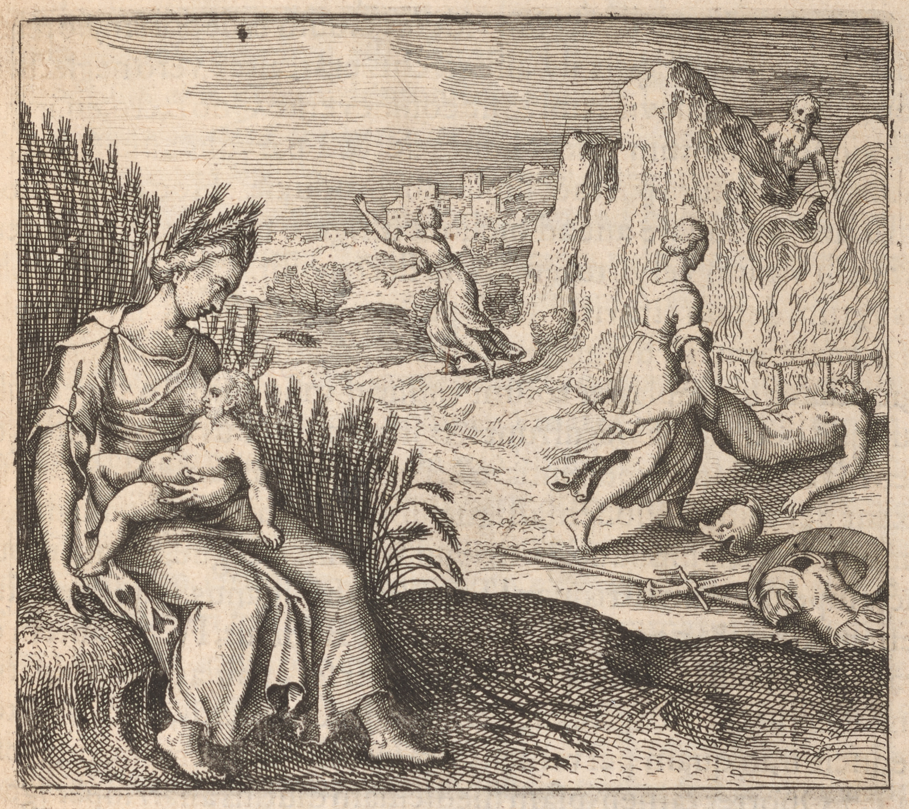

110149
EmblemeEmblem 35. Of the Secrets of Nature.
As Ceres accustomed Triptolemus, and Thetis Achilles to abide in
fire, soeso allsoalso dothdoes an artist the stone.
149
Emblema XXXV. De Secretis Naturæae.
Ceres Triptolemum, Thetis Achillem, ut sub igne
morari assuefecit, sic artifex lapidem.
148
FUGA XXXV. in 7. suprà.
Wie Ceres Triptolemum, die Thetis Achillem unterm
Fewr zu tawren gewehnet hat / also sol der Künstler
den Stein gewehnen.

EpigrammeEpigram 35.
Achilles and Triptolemus enur'dinured,
By documents, the hottest flames endur'dendured:
Thetis and Ceres thus did them sustainesustain,
By night with fire, ith'in the day with milkemilk amaineamain.
As to a babe the breast is naturallnatural,
SoeSo fire to th'the med'cinemedicine PhilosophicallPhilosophical.
Epigramma XXXV.
Respice Triptolemum, durúmque in prœoelio Achillem,
Matre docente, æaestus ut didicêre graves.
Illum Diva Ceres, Thetis hunc durabat in igne
Noctu, lacte ferens ubera plena die:
Haud secus assuescat medicina beata Sophorum,
Quàm puer ad mammas, ut queat igne frui.
XXXV. Epigrammatis Latini versio Germanica.
Schaw an Triptolemum und Achillem großmühtig im Streit /
Wie sie zuvertragen Hitz von ihr Mutter seynd bereit /
Jenen hat Ceres, disen Thetis, im Fewr verhartet
Bey Nacht / und gegeben Milch bey Tage wol geartet /
Nicht anderst die Artzney der Weisen muß werden regiret /
Als ein Kindt an Mutter Brüst / durch Fewr werden ernehret.
111150
Lycurgus that Law=-makerLawmaker of the Spartans ShewedShowed to the people in -
an assembly in the Theater by an ocular example, how farrefar customecustom
and use whether good or evillevil may prævayleprevail, heehe bringing in two whelps
produced at one litter, and between both setting a pottpot full of meat, -
and a hare, one of which whelps seeing the food and the hare, left
the food and pursudpursued the hare, because heehe was soeso accustomed, but
the other not regarding the hare, emptyedemptied the pottpot, heehe being allsoalso -
soeso accustomed: which being done, behold, saythsays heehe, here you see by
little ones, how farrefar education and customecustom may prævayleprevail, even in those,
which nature hathhas produced exactly alike, and of the same litter: After
this manner therefore is it convenient to rectify or direct nature to bet=
ter things, which is as wax, easily flexible to vice or virtue. That -
which heehe hathhas demonstrated to be true in politickspolitics, the Philosophers
doedo agree to be allsoalso soeso in PhysicksPhysics. How effectualleffectual customecustom is in -
men and brutes daily examples are seen throughout the whole world,
in vegetables allsoalso are many obvious, but in minerallmineral and metallickemetallic -
bodyesbodies weewe have not soeso much experience: yet neverthelessenevertheless they fix
their stone by customecustom in fire agreableagreeable to it, as they in innumerable -
places doedo signify: For it must be nourished by fire, as a child by milkemilk
upon its mothers breasts: whereupon saythsays Emiganus; behold the babe -
sucking, and hinder him not: And Bodillus, The infant borneborn is nou=
rished by milkemilk and fire alone, and by little and little whilst heehe
is very young, and the more heehe is burned, his bones being comforted,
heehe is brought to youth, to which attaining, heehe is able to provide for -
himselfehimself: And Arnold in the Rosary booke 2. Chapt 7. Yet the Medicine
must be a long time roasted by fire, and nourished as a child -
with the breasts. These same things have the most ancient Philo=
sophers been pleased to demonstrate by the allegoryesallegories of Triptole=
mus and Achilles accustomed to lyelie and being hardened in fire, they
both denoting nothing elselse but the ChymicallChymical subject, besides which
the fable would be insignificant and absurd, unworthy either to be
appropriated to other morallmoral things, or inculcated to the ears of the -
learned: Ceres did as a NurceNurse feed Triptolemus in the day time -
with milkemilk, and in the night laydlaid him in fire, whereupon the -
youth being very well nourished, his father Eleusius at length -
tooketook notice of it: hereupon Ceres killdkilled Eleusius, and gave the -
youth Triptolemus a chariottchariot drawnedrawn
Discourse 35.
Lycurgus that Law=-makerLawmaker of the Spartans ShewedShowed to the people in -
an assembly in the Theater by an ocular example, how farrefar customecustom
and use whether good or evillevil may prævayleprevail, heehe bringing in two whelps
produced at one litter, and between both setting a pottpot full of meat, -
and a hare, one of which whelps seeing the food and the hare, left
the food and pursudpursued the hare, because heehe was soeso accustomed, but
the other not regarding the hare, emptyedemptied the pottpot, heehe being allsoalso -
soeso accustomed: which being done, behold, saythsays heehe, here you see by
little ones, how farrefar education and customecustom may prævayleprevail, even in those,
which nature hathhas produced exactly alike, and of the same litter: After
this manner therefore is it convenient to rectify or direct nature to bet=
ter things, which is as wax, easily flexible to vice or virtue. That -
which heehe hathhas demonstrated to be true in politickspolitics, the Philosophers
doedo agree to be allsoalso soeso in PhysicksPhysics. How effectualleffectual customecustom is in -
men and brutes daily examples are seen throughout the whole world,
in vegetables allsoalso are many obvious, but in minerallmineral and metallickemetallic -
bodyesbodies weewe have not soeso much experience: yet neverthelessenevertheless they fix
their stone by customecustom in fire agreableagreeable to it, as they in innumerable -
places doedo signify: For it must be nourished by fire, as a child by milkemilk
upon its mothers breasts: whereupon saythsays Emiganus; behold the babe -
sucking, and hinder him not: And Bodillus, The infant borneborn is nou=
rished by milkemilk and fire alone, and by little and little whilst heehe
is very young, and the more heehe is burned, his bones being comforted,
heehe is brought to youth, to which attaining, heehe is able to provide for -
himselfehimself: And Arnold in the Rosary booke 2. Chapt 7. Yet the Medicine
must be a long time roasted by fire, and nourished as a child -
with the breasts. These same things have the most ancient Philo=
sophers been pleased to demonstrate by the allegoryesallegories of Triptole=
mus and Achilles accustomed to lyelie and being hardened in fire, they
both denoting nothing elselse but the ChymicallChymical subject, besides which
the fable would be insignificant and absurd, unworthy either to be
appropriated to other morallmoral things, or inculcated to the ears of the -
learned: Ceres did as a NurceNurse feed Triptolemus in the day time -
with milkemilk, and in the night laydlaid him in fire, whereupon the -
youth being very well nourished, his father Eleusius at length -
tooketook notice of it: hereupon Ceres killdkilled Eleusius, and gave the -
youth Triptolemus a chariottchariot drawnedrawn
111150
Discourse 35.
with winged Dragons, -
whereby heehe passdpassed through the aireair into all parts of the world, -
and taught men how to sow cornecorn: But this Triptolemus is the -
tincture nourished by fire after a PhilosophicallPhilosophical manner, which
being drawnedrawn by Serpents, that is, Mercury, taught men how the
Philosophers seeds are to be cast into their earth. These same things
are ascribed to Osiris, who to that end tooketook a view of the whole world,
as weewe have elswhereelsewhere demonstrated, and to Dionysius, who travelled -
throughout the world teaching men the use of wine: Now these three
Triptolemus, Osiris, and Dionysius are of one intention and office, -
yea one thing; as allsoalso Achilles, who being most valiant was to be -
sent to the TrojaneTrojan warrewar; his father was Peleus, that is, earth, or the
mountainemountain Peleus, his mother Thetis goddessegoddess of the Sea or waters; from
these Achilles descended: But at their nuptiallsnuptials the golden apple of Eris
was produced, the first cause of the TrojaneTrojan warrewar, wherefore pro=
cedingproceeding from those nuptiallsnuptials reason there was that heehe should determine
it: Achilles is saydsaid to be hardened by his mother after the same manner -
as the aforesaydaforesaid Triptolemus by Ceres, concerning whomewhom weewe have
saydsaid enough in the 6th bookebook of HieroglyphicksHieroglyphics, which here to repeat -
weewe thinkethink superfluous. The nutriment therefore of the Stone is fire,
but it is not thereby (as some may falsely imagine) extended into lon=
gitude, latitude, and profundity, nor dothdoes it receive increment in -
weight; because it acquires onelyonly virtue, maturation, and colourcolor from
fire, carrying all the rest with it as viatickeviatics provisions: For when its -
parts are from severallseveral places congested, purged, and conjoynedconjoined, it hathhas in
it all things requisite for it: Whereupon saythsays a Philosopher in the Ro=
sary. Omnia fert Secum quibus indiget hæc aqua fœtum.
Nor indeed is any strange thing added to it from the beginning to the
end, except it be homogeneous, nor separated, if not heterogeneous: -
But every man ought to consider, before heehe begin any thing, how heehe
may come to the knowledge of those Dragons that are to be joynedjoined to
the chariot of Triptolemus, which are winged and volatile, which
if you desire to know, you will find them in the PhilosophicallPhilosophical dung: -
for they are dung, and are generated from dung, and are that vessellvessel,
which Mary saythsays, is not negromanticallnegromantical, but the regiment of your
fire, without which you will effect nothing: I have revealed to you -
the truth, which by incredible pains I acquired from the monuments
of the Ancients, not without the expense of many years . . . .
whereby heehe passdpassed through the aireair into all parts of the world, -
and taught men how to sow cornecorn: But this Triptolemus is the -
tincture nourished by fire after a PhilosophicallPhilosophical manner, which
being drawnedrawn by Serpents, that is, Mercury, taught men how the
Philosophers seeds are to be cast into their earth. These same things
are ascribed to Osiris, who to that end tooketook a view of the whole world,
as weewe have elswhereelsewhere demonstrated, and to Dionysius, who travelled -
throughout the world teaching men the use of wine: Now these three
Triptolemus, Osiris, and Dionysius are of one intention and office, -
yea one thing; as allsoalso Achilles, who being most valiant was to be -
sent to the TrojaneTrojan warrewar; his father was Peleus, that is, earth, or the
mountainemountain Peleus, his mother Thetis goddessegoddess of the Sea or waters; from
these Achilles descended: But at their nuptiallsnuptials the golden apple of Eris
was produced, the first cause of the TrojaneTrojan warrewar, wherefore pro=
cedingproceeding from those nuptiallsnuptials reason there was that heehe should determine
it: Achilles is saydsaid to be hardened by his mother after the same manner -
as the aforesaydaforesaid Triptolemus by Ceres, concerning whomewhom weewe have
saydsaid enough in the 6th bookebook of HieroglyphicksHieroglyphics, which here to repeat -
weewe thinkethink superfluous. The nutriment therefore of the Stone is fire,
but it is not thereby (as some may falsely imagine) extended into lon=
gitude, latitude, and profundity, nor dothdoes it receive increment in -
weight; because it acquires onelyonly virtue, maturation, and colourcolor from
fire, carrying all the rest with it as viatickeviatics provisions: For when its -
parts are from severallseveral places congested, purged, and conjoynedconjoined, it hathhas in
it all things requisite for it: Whereupon saythsays a Philosopher in the Ro=
sary. Omnia fert Secum quibus indiget hæc aqua fœtum.
Nor indeed is any strange thing added to it from the beginning to the
end, except it be homogeneous, nor separated, if not heterogeneous: -
But every man ought to consider, before heehe begin any thing, how heehe
may come to the knowledge of those Dragons that are to be joynedjoined to
the chariot of Triptolemus, which are winged and volatile, which
if you desire to know, you will find them in the PhilosophicallPhilosophical dung: -
for they are dung, and are generated from dung, and are that vessellvessel,
which Mary saythsays, is not negromanticallnegromantical, but the regiment of your
fire, without which you will effect nothing: I have revealed to you -
the truth, which by incredible pains I acquired from the monuments
of the Ancients, not without the expense of many years . . . .
150
Lycurgus ille Spartanorum legislator, quantum consuetudo
valeat, &et usus sive bonus sive malus, oculari exemplo populo in
theatrali concione exposuit, dum adduceret binos catulos uno eni-
xu editos; inq́ue medio poneret ollam pulte refertam ac leporem;
quorum catulorum unus cùm videret cibum &et leporem, eo relicto
hunc insecutus est, quia ita assuefactus erat, alter verò neglecto le-
pore, ollam evacuavit, cùm &et sic consueverat. Quo facto, en, inquit,
hîc videtis, quantum valeat educatio, &et à parvulis assuefactio etiãetiam
in illis, quos natura pares &et similimos produxit. Hoc itaque modo
naturam emendare aut ad meliora dirigere convenit, quæae cæaerea
est, ut in vitium vel virtutem facilè flecti possit. Quod ille in politi-
cis verum demonstravit, Philosophi quoque in Physicis se ita habe-
re consentiunt: In hominibus, brutis quantum consuetudo valeat,
quotidiana exempla per totum visuntur mundum: In vegetabilib.vegetabilibus
quoque non pauca occurrunt: At in mineralibus &et metallicis ea-
dem dari, rarioris experientiæae est: Nihilominùs tamen lapidem suũsuum
fixant per assuefactionem in igne sibi conveniente, quemadmodũquemadmodum
innumeris locis innuunt: Nutriendus enim est igne, tanquam puer
lacte super ubera matris suæae: Unde dicit Emiganus, inspicite lactan-
tem puerum, &et ne impediatis eum: Et Bodillus, Fœoetus autem ex-
tractus non nisi lacte nutritur, &et igne per se &et paulatim dum parvu-
lus est, &et quanto magis exuritur, ossibus confortatis, in juventutem
deducitur, in quam perveniens, sibi sufficit. Et Arnoldus in Rosar.Rosario
l.libro 2. c.capite 7. Oportet tamen ipsam medicinam diutiùs assari super ignem
&et nutriri instar pueri in uberibus. Hæaec eadem antiquissimi Philoso-
phi demonstrare voluerunt in allegoriis de Triptolemo &et Achille
sub igne assuefactis jacere &et induratis, cùm uterque nil nisi chymi-
cum subjectum denotet, præaeter quod insulsa esset fabula, indigna
quæae vel aliis rebus moralibus accommodaretur, vel doctorum au-
ribus inculcaretur: Ceres, veluti nutrix Triptolemum interdiu la-
cte nutrivit, noctu sub ignibus posuit, unde cùm puer optimè alere-
tur, pater Eleusius aliquando hoc observavit: Hinc Ceres Eleusium
interemit, &et puero Triptolemo currum donavit, anguib.anguibus tractum,
DISCURSUS XXXV.
Lycurgus ille Spartanorum legislator, quantum consuetudo
valeat, &et usus sive bonus sive malus, oculari exemplo populo in
theatrali concione exposuit, dum adduceret binos catulos uno eni-
xu editos; inq́ue medio poneret ollam pulte refertam ac leporem;
quorum catulorum unus cùm videret cibum &et leporem, eo relicto
hunc insecutus est, quia ita assuefactus erat, alter verò neglecto le-
pore, ollam evacuavit, cùm &et sic consueverat. Quo facto, en, inquit,
hîc videtis, quantum valeat educatio, &et à parvulis assuefactio etiãetiam
in illis, quos natura pares &et similimos produxit. Hoc itaque modo
naturam emendare aut ad meliora dirigere convenit, quæae cæaerea
est, ut in vitium vel virtutem facilè flecti possit. Quod ille in politi-
cis verum demonstravit, Philosophi quoque in Physicis se ita habe-
re consentiunt: In hominibus, brutis quantum consuetudo valeat,
quotidiana exempla per totum visuntur mundum: In vegetabilib.vegetabilibus
quoque non pauca occurrunt: At in mineralibus &et metallicis ea-
dem dari, rarioris experientiæae est: Nihilominùs tamen lapidem suũsuum
fixant per assuefactionem in igne sibi conveniente, quemadmodũquemadmodum
innumeris locis innuunt: Nutriendus enim est igne, tanquam puer
lacte super ubera matris suæae: Unde dicit Emiganus, inspicite lactan-
tem puerum, &et ne impediatis eum: Et Bodillus, Fœoetus autem ex-
tractus non nisi lacte nutritur, &et igne per se &et paulatim dum parvu-
lus est, &et quanto magis exuritur, ossibus confortatis, in juventutem
deducitur, in quam perveniens, sibi sufficit. Et Arnoldus in Rosar.Rosario
l.libro 2. c.capite 7. Oportet tamen ipsam medicinam diutiùs assari super ignem
&et nutriri instar pueri in uberibus. Hæaec eadem antiquissimi Philoso-
phi demonstrare voluerunt in allegoriis de Triptolemo &et Achille
sub igne assuefactis jacere &et induratis, cùm uterque nil nisi chymi-
cum subjectum denotet, præaeter quod insulsa esset fabula, indigna
quæae vel aliis rebus moralibus accommodaretur, vel doctorum au-
ribus inculcaretur: Ceres, veluti nutrix Triptolemum interdiu la-
cte nutrivit, noctu sub ignibus posuit, unde cùm puer optimè alere-
tur, pater Eleusius aliquando hoc observavit: Hinc Ceres Eleusium
interemit, &et puero Triptolemo currum donavit, anguib.anguibus tractum,
151
quo ille per aërem in omnes mundi partes contendit, &et mortales
frugum seminationem docuit: Sed hic Triptolemus tinctura est
Philos.Philosophica eo modo sub igne nutrita, quæae à serpentibus ducta, hoc est,
Mercurio, docuit homines, quomodo semina Philos.Philosophica in suam terram
jacienda sint. Hæaec eadem asscribuntur Osiridi, qui ideò terrarum
orbem perlustravit, ut alibi demonstravimus, &et Dionyso, qui vini u-
sum homines docens peregrinatus est per mundum: Sunt verò hi
tres Triptolemus, Osiris &et Dionysius unius intentionis &et officii, i-
mò res una; ut etiam Achilles, qui fortissimus ad bellum Trojanum
mittendus erat; Ejus pater Peleus, id est, terra, vel Peleus mons, ma-
ter Thetis dea marina seu aquarum; his nascitur Achilles: At in eorũeorum
nuptiis pomum aureum Eridos prolatum est, prima causa belli Tro-
jani, unde ex iis nuptiis natus, non immeritò ejus executor extitit:
Induratus verò eodem modo Achilles à matre sua dicitur, quo an-
tedictus Triptolemus à Cerere; de quo lib.libro 6. Hieroglyph.Hieroglyphicorum satis dixi-
mus, quod hic repetere supervacaneum ducimus. Lapidis itaque
nutrimentum ignis est, at non inde, ut quidam perperam existimare
posset, in longum, latum &et profundum, extenditur, neque in pon-
dere incrementum sumit; quia saltem virtutem, maturationem &et
colorem ab igne acquirit, omnia reliqua, tanquam commeatus &et
víatica secum adferens. Quando enim ex diversis locis ejus partes
sunt congestæae, purgatæae &et conjunctæae, habet in se omnia, quibus in-
diget: Unde apud Rosarium Philosophus: Omnia fert secum, quibus
indiget hæaec aqua fœoetum. Nec verò quicquam peregrini ab initio ad fi-
nem illi additur, nisi sit homogeneum, nec separatur, nisi heteroge-
neum: Quilibet autem animadvertere debet, uti dracones Tripto-
lemi currui jungendos bene agnoscat, antequam quid incipiat, qui
sunt alati &et volatiles; quos si scire desideres, in fimo Philosophico in-
venies. Sunt enim fimus, &et generantur ex fimo, suntq́ue illud vas,
quod Maria dicit, non esse negromanticum, sed regimen ignis tui,
sine quo nihil efficies: Veritatem tibi aperui, quam hausi incredibili
labore, non absque sumptu multorum annorum, ex veterum mo-
numentis.
quo ille per aërem in omnes mundi partes contendit, &et mortales
frugum seminationem docuit: Sed hic Triptolemus tinctura est
Philos.Philosophica eo modo sub igne nutrita, quæae à serpentibus ducta, hoc est,
Mercurio, docuit homines, quomodo semina Philos.Philosophica in suam terram
jacienda sint. Hæaec eadem asscribuntur Osiridi, qui ideò terrarum
orbem perlustravit, ut alibi demonstravimus, &et Dionyso, qui vini u-
sum homines docens peregrinatus est per mundum: Sunt verò hi
tres Triptolemus, Osiris &et Dionysius unius intentionis &et officii, i-
mò res una; ut etiam Achilles, qui fortissimus ad bellum Trojanum
mittendus erat; Ejus pater Peleus, id est, terra, vel Peleus mons, ma-
ter Thetis dea marina seu aquarum; his nascitur Achilles: At in eorũeorum
nuptiis pomum aureum Eridos prolatum est, prima causa belli Tro-
jani, unde ex iis nuptiis natus, non immeritò ejus executor extitit:
Induratus verò eodem modo Achilles à matre sua dicitur, quo an-
tedictus Triptolemus à Cerere; de quo lib.libro 6. Hieroglyph.Hieroglyphicorum satis dixi-
mus, quod hic repetere supervacaneum ducimus. Lapidis itaque
nutrimentum ignis est, at non inde, ut quidam perperam existimare
posset, in longum, latum &et profundum, extenditur, neque in pon-
dere incrementum sumit; quia saltem virtutem, maturationem &et
colorem ab igne acquirit, omnia reliqua, tanquam commeatus &et
víatica secum adferens. Quando enim ex diversis locis ejus partes
sunt congestæae, purgatæae &et conjunctæae, habet in se omnia, quibus in-
diget: Unde apud Rosarium Philosophus: Omnia fert secum, quibus
indiget hæaec aqua fœoetum. Nec verò quicquam peregrini ab initio ad fi-
nem illi additur, nisi sit homogeneum, nec separatur, nisi heteroge-
neum: Quilibet autem animadvertere debet, uti dracones Tripto-
lemi currui jungendos bene agnoscat, antequam quid incipiat, qui
sunt alati &et volatiles; quos si scire desideres, in fimo Philosophico in-
venies. Sunt enim fimus, &et generantur ex fimo, suntq́ue illud vas,
quod Maria dicit, non esse negromanticum, sed regimen ignis tui,
sine quo nihil efficies: Veritatem tibi aperui, quam hausi incredibili
labore, non absque sumptu multorum annorum, ex veterum mo-
numentis.
view: